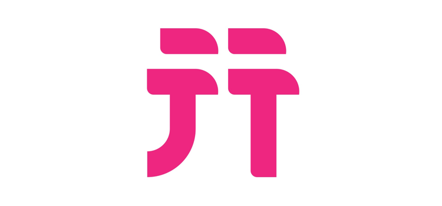
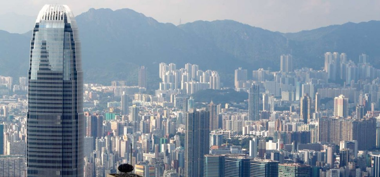
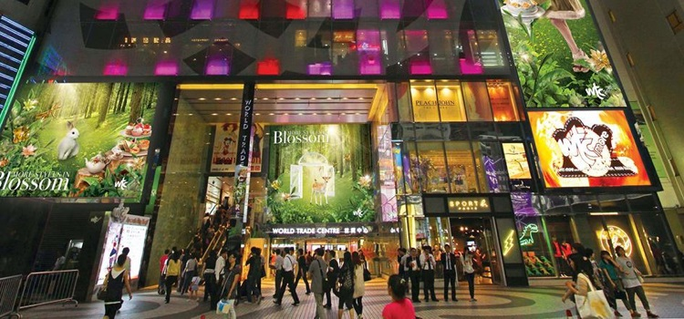
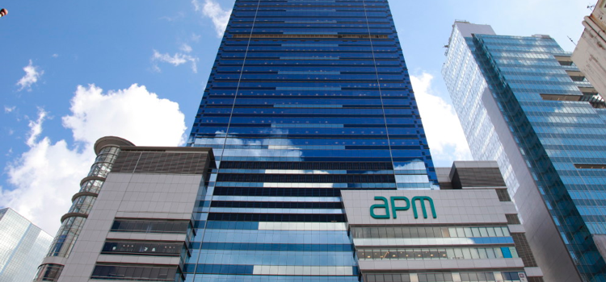
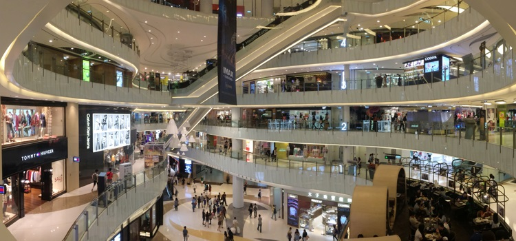
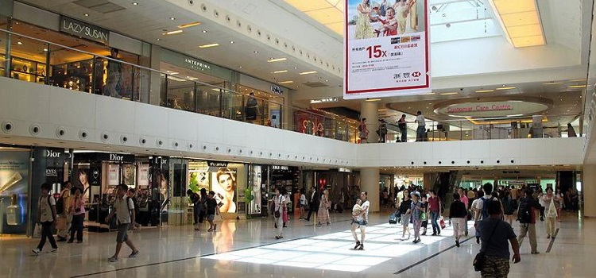

来香港旅游，遇到暴雨、台风怎么办？怕街上的人多挤迫怎么办？同行亲朋好友喜欢购物，您却喜欢品尝美食，该怎么办？
您都不用担心！因为香港新鸿基地产旗下的多元化商场组合为您带来室内一站式生活体验。正所谓「民以食为天」，新鸿基知道您在旅游时注重味觉享受，所以无论是香港菜式、日本菜、法国菜、甚至是米之莲推介，您都可以在商场找到。吃饱后，您可以尽情在商场里购物，多个国际和本土品牌进驻旗下商场，保证您会买到如意的商品。如您逛街累了，更可以与同行者在商场里享受娱乐活动，包括看电影和到卡拉OK场所高歌一曲等等。

出发前往商场前，强烈建议您到无忧行APP浏览及领取新鸿基地产各商场吃、喝、玩乐、购物优惠券，消费时谨记出示优惠券，即可作出价格减免或送出礼品。作为精明消费者的您，没理由不领取优惠券吧！

现在就为您介绍香港新鸿基地产旗下分布在全港各区的部分商场。
香港岛
国际金融中心商场

特色：商场临近中环海滨，连接国际金融中心一期和二期、四季酒店和四季汇，是国际级著名购物休闲地标。您可以在这里找到近200间国际品牌及特色概念店！
商铺类型：家私及电子器材、婴儿用品、银行、书籍及工艺礼品、电影院、花店、健美、珠宝饰物、美容护理、百货公司、超级市场、旅游用品
食店：中式美馔、亚洲美食（日本菜、泰国菜）、咖啡店和葡萄酒店、甜点及轻便美点、西式美馔（法国菜、美国快餐、意大利菜等）
地址：香港岛中环金融街8号
前往方式：港铁港岛线中环站A出口或机场快线香港站F出口
旅客服务：食肆推介及预留座位服务、专人代客提送服务
其他礼宾服务：小朋友可获赠糖果及汽球、本地传真／影印／扫描服务、轮椅及婴儿车租赁服务、手提电话充电服务、借用雨伞服务、免费无线上网服务
营业时间：星期一至日10:00-22:00
网站：http://ifc.com.hk/
查询热线：+852 2295 3308
WTC More

特色：商场坐落在铜锣湾中心地带，楼高14层，汇集逾80家店铺，深受潮流人士欢迎。此外，如您在商场内富有特色的餐厅里用膳，还可一拼欣赏维港美景，尤其是在维港烟花汇演时，海景餐厅是最佳观赏地方，更有米之莲推介食肆进驻商场里。
商铺类型：时尚服装及饰物、美容护理、珠宝钟表、生活品味
食店：东方美肴（粤菜、上海菜、台湾菜、日本菜、泰国菜、韩国菜）、西式佳肴（法国菜、意大利菜、美国菜、意大利菜）
地址：香港铜锣湾告士打道 280 号
前往方式：港铁港岛线铜锣湾站D1出口/乘搭公共巴士2、18、18P、99、780P、N8P、102、103、106、107、108、110、117、619、671、N171、170、967X、A11、N11、N170、N182、N691
有关网站：www.wtcmore.com/T
旅客服务：免费地图供应、邮票售卖服务、天际100门票供应、挪亚方舟门票代售
其他礼宾服务：免费雨衣供应、免费尿片供应及热奶器服务、婴儿车借用服务、手提电话充电、雨伞暂借服务、本地传真及文件打印服务、卫生口罩供应
营业时间：星期一至日10:00-23:00
网站：http://www.wtcmore.com/
查询热线：+852 2576 4121
九龙半岛
APM

特色：APM位于观塘，是东九龙的旗舰商场。APM的意思是结合AM（日）与PM（夜）,代表夜行零售的创新概念，一般零售商店营业至晚上12时，餐饮食店营业至凌晨2时，而娱乐商店更营业至深宵，令心境年轻的您在何时都能娱乐购物！
商铺类型：时尚服装及饰物、美容护理、书籍、礼品、生活品味、影音、电子产品、娱乐（电影院、卡拉OK）、超级市场、便利店
食店：东方美肴（香港本地菜、粤菜、潮州菜、北京菜、台湾菜、日本菜、泰国菜、越南菜、星马菜）、甜点及轻便美点、美食广场、咖啡店和葡萄酒店、西式佳肴（快餐、美国菜）
地址：九龙观塘观塘道418号
前往方式：港铁观塘线观塘站A2出口/乘搭公共巴士277X、74X、15A、277E、277P、5R、93K、11D、40P、38、40、42C、80、89D、16、14X、11C、11X、14、15、215P、215X、61R、671/跨境巴士来回深圳皇岗、深圳湾口岸及深圳龙华高铁站
有关网站：www.hkapm.com.hk/T
旅客服务：购物便利柜
其他礼宾服务：育儿室、自助手提电话/平板计算机充电柜
营业时间：星期一至日1100-翌日0200
网站：https://www.hkapm.com.hk/
查询热线：+852 2267 0500
新世纪广场

特色：新世纪广场位处于港铁旺角东站上盖及公共运输交汇点，交通便利。商场以简约时尚设计风格，最适合一家大小的旅客来游玩，爸爸妈妈可以在各色各样的名店购物，而小孩可以到户外休憩儿童游乐场尽情玩乐，最后您们一家可到备有IMAX电影院看电影，享受天伦之乐！
商铺类型：儿童服饰、娱乐（卡拉OK、电影院）、时尚服饰及配饰、书籍、珠宝钟表、生活品味、美容及个人护理、超级市场、运动服饰、电子产品
食店：亚洲风味（粤菜、潮州菜、北京菜、上海菜、泰国菜、日本菜、韩国菜、越南菜）、美食广场、西式餐厅（美国菜、意大利菜）、咖啡店、甜点及轻便美点
地址：香港旺角太子道西 193 号
前往方式：港铁东铁线旺角东站D出口/乘搭公共巴士44、58X、59X、67X、93K、N293、1、1A、3C、12A、24、27、42、218A、81S、87D、95、104、203C、N216
有关网站：www.moko.com.hk/T
旅客服务：本地电话借用（只限拨出）、接待参观团体、挪亚方舟门票及车票代售、香港邮票代售
其他礼宾服务：「八达通」充值服务、轮椅借用、雨伞借用、外置充电器借用、轻便雨衣借用、口罩供应、婴儿车及哺乳巾借用、免费婴儿尿片、即弃婴儿围巾供应、婴儿食品及奶瓶加热
营业时间：星期一至日10:00-22：00
网站：http://www.moko.com.hk/
查询热线：+852 2397 0790
新界
新城市广场

特色：新城市广场是新鸿基的旗舰商场，由第一、三期和HomeSquare组成。商场位于新界市中心，交通四通八达，是必去的商场之一。这里汇聚超过350间国际和本土商店，令您购得开心。在五千多平方米的露天花园享受美食，令您吃得滋味。在「史诺比开心世界」主题游乐园畅玩，令您玩得尽兴！
商铺类型：时尚服饰及配饰、美容及个人护理、珠宝钟表、生活品味、百货公司、超级市场、书籍、礼品、影音器材、银行、娱乐（电影院）
食店：中式佳肴（香港菜、粤菜、潮州菜、上海菜、台湾菜、四川菜）、亚洲荟萃（日本菜、泰国菜、新加坡菜、越南菜、韩国菜）、轻便美食及零售美食、西方美食（意大利菜、美国菜、法国菜）、咖啡店
地址：香港沙田正街
前往方式：港铁东铁线沙田站A出口 /乘搭公共巴士83S、249X、282、283、284、288、299X、N170、N73、47X、48X、49X、72、80K、80M、81、81K
有关网站：www.newtownplaza.com.hk/T
旅客服务：跨境巴士服务（到深圳湾口岸）、储物柜服务、赏心购物天使服务
营业时间：星期一至日10:00-22:00
网站：http://www.newtownplaza.com.hk/
查询热线：一期：+852 2608 9329 / 三期：+852 2691 6576